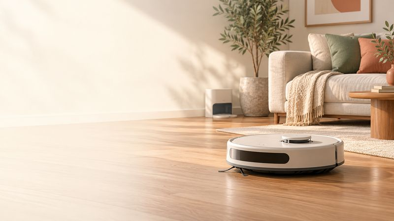
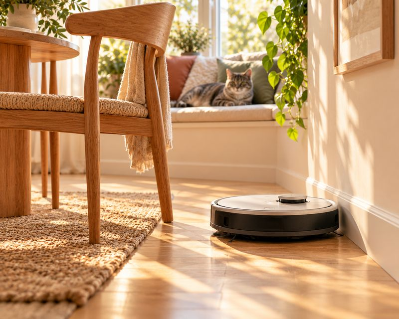
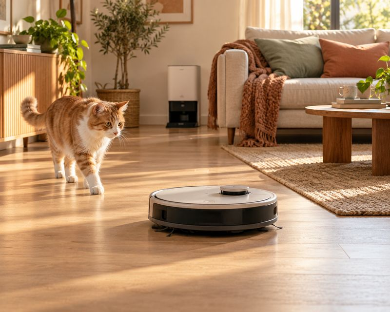
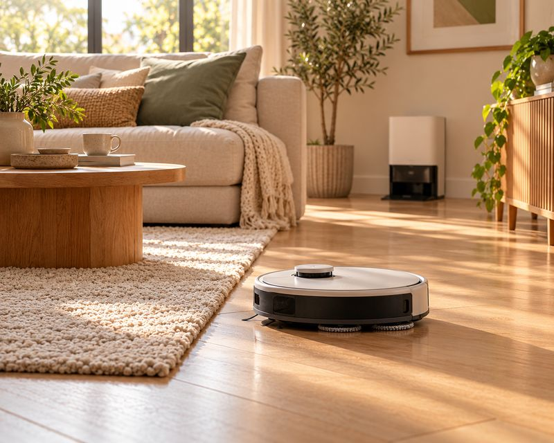
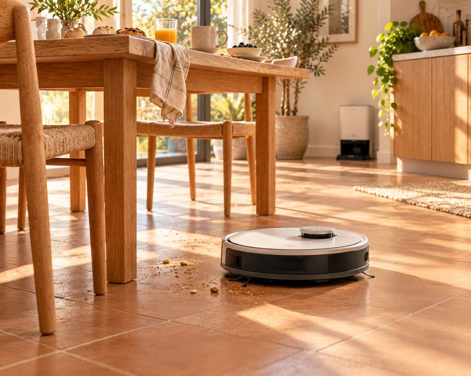
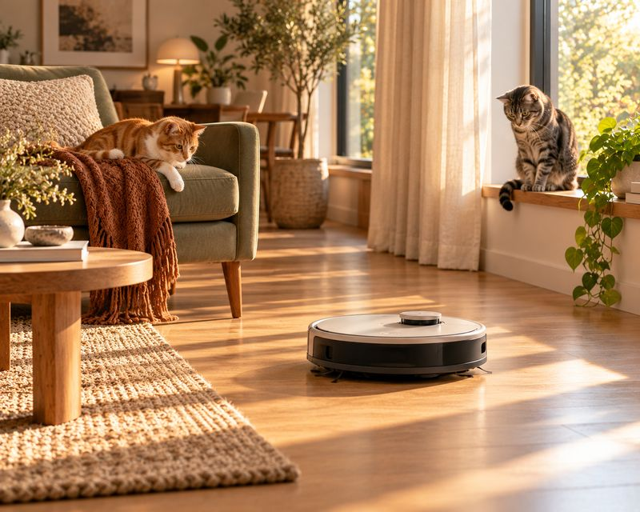
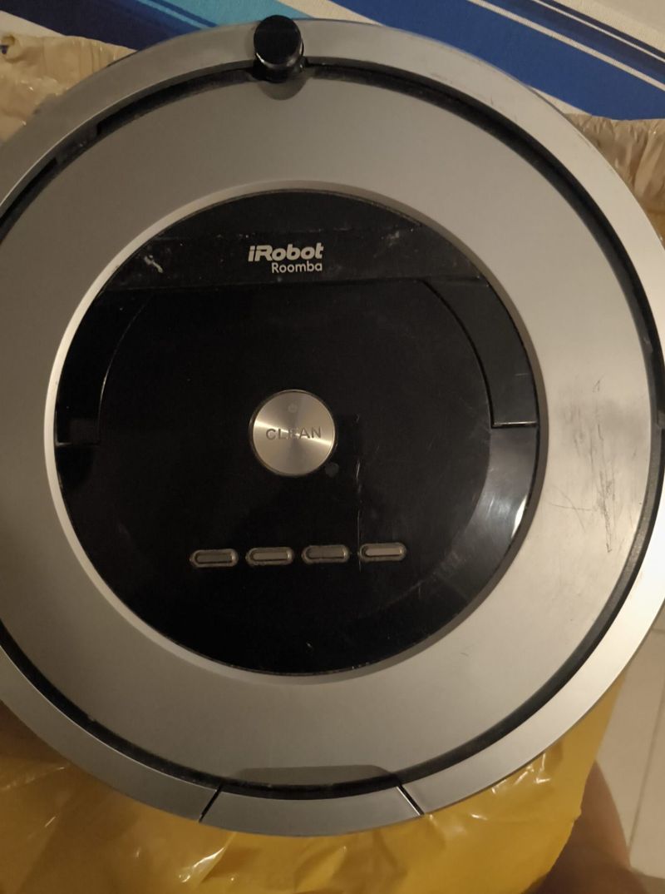
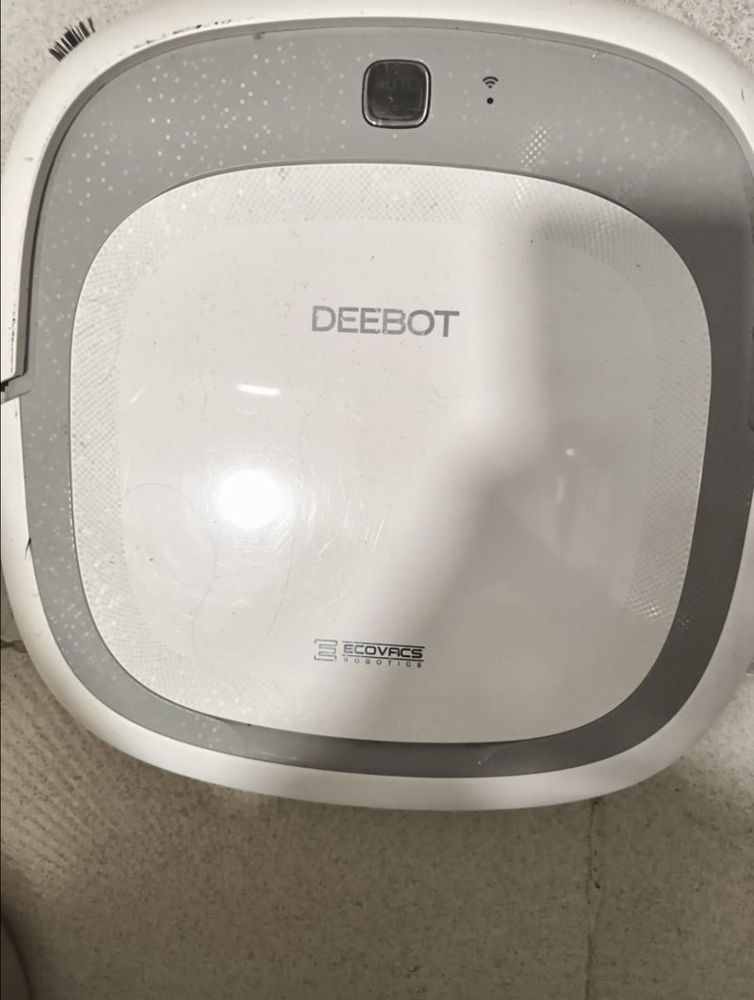
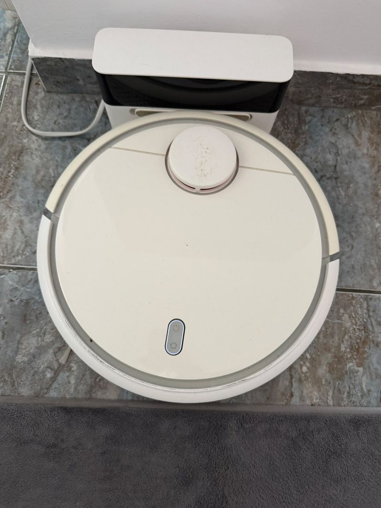
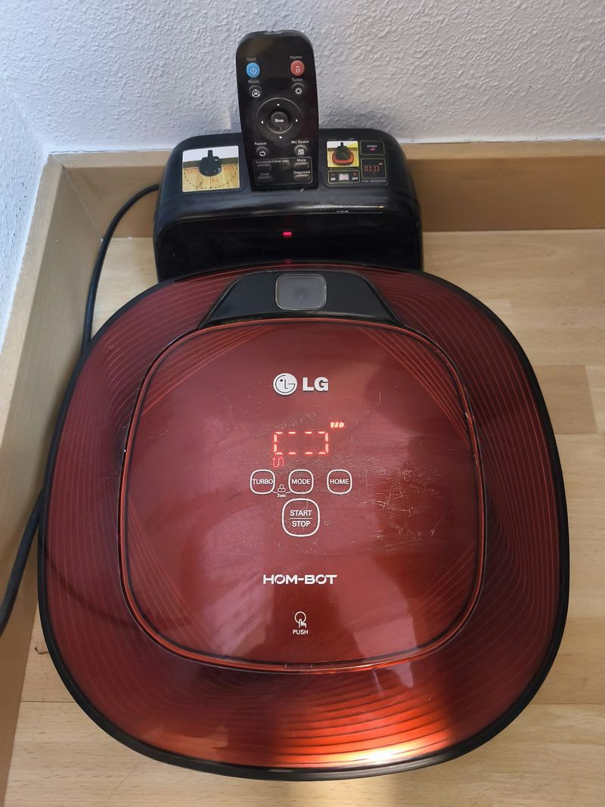

Robots aspiradores: lo que hemos visto de verdad en casa
Por el equipo de Casa y Comparativa · actualizado el 24 oct 2026
Aviso de afiliados: En calidad de Afiliado de Amazon, obtenemos ingresos por las compras adscritas que cumplen los requisitos aplicables. Si compras desde nuestros enlaces, no te cuesta más. Solo enlazamos ofertas vendidas por Amazon.
- Piso pequeño o mediano y poco presupuesto: Roomba 115 Combo (179 €).
- Mascotas y suelo duro, gama media: Roomba Plus 575 Combo o ECOVACS T90 Max Omni.
- Gama alta y alfombras: Roomba Max 875 (879 €). Aun así, en alfombras gruesas ningún robot sustituye del todo a la aspiradora.
- ¿Quieres que te avise hablando? Los Roomba avisan con voz si se atascan.
Los que recomendamos (vendidos por Amazon)

iRobot Roomba 115 Combo + AutoEmpty
- 15.000 Pa; aspira y friega
- Base que vacía hasta 90 días
- Hasta 83 m² por carga
- Cepillos antienredos

iRobot Roomba Plus 515 Combo
- 22.000 Pa
- Levanta las mopas 10 mm en alfombras
- Base que lava (75 °C) y seca las mopas
- Cepillos antienredos

iRobot Roomba Plus 575 Combo
- 25.000 Pa
- Mopas que llegan 35 mm hacia los bordes
- Supera umbrales de hasta 35 mm
- Base que lava y seca con calor

ECOVACS DEEBOT T90 Max Omni
- 30.000 Pa
- ZeroTangle 4.0 contra enredos de pelo
- Friega con rodillo
- Base que vacía, lava y seca a 45 °C

iRobot Roomba Plus 676
- 30.000 Pa con SealForce para alfombras
- Rodillo con agua a 60 °C; se levanta 10 mm en alfombras
- Base AutoWash, hasta 90 días
- Mide 9,95 cm de alto; sube desniveles de 3,5 cm

iRobot Roomba Max 875
- 35.000 Pa con SealForce para alfombras
- Cepillo que corta el pelo largo
- Levanta el rodillo y pone una barrera en alfombras
- Rodillo con agua a 60 °C y base AutoWash
* Los Roomba avisan con voz si se atascan o si la bolsa de la base está llena, según iRobot (tabla de errores, consultada el 24 oct 2026). Que hablen en español está sin confirmar. Datos técnicos del fabricante, según la ficha de Amazon.es (24 oct 2026). Pruebas independientes de estos modelos: sin dato.
Comparativa rápida
| Modelo | Precio* | Succión | Friega | Base | Avisa con voz** |
|---|---|---|---|---|---|
| Roomba 115 Combo | 179 € | 15.000 Pa | Mopa | Vacía | Sí |
| Roomba Plus 515 Combo | 379 € | 22.000 Pa | Mopas | Lava y seca | Sí |
| Roomba Plus 575 Combo | 419 € | 25.000 Pa | Mopas | Lava y seca | Sí |
| ECOVACS T90 Max Omni | 424 € | 30.000 Pa | Rodillo | Vacía, lava y seca | Sí*** |
| Roomba Plus 676 | 599 € | 30.000 Pa | Rodillo | AutoWash | Sí |
| Roomba Max 875 | 879 € | 35.000 Pa | Rodillo | AutoWash | Sí |
* Precio en Amazon.es el 24 oct 2026; puede cambiar. ** Roomba: avisa si se atasca o si la bolsa de la base está llena (iRobot, 24 oct 2026; español sin confirmar). *** ECOVACS: el manual de la UE (sep 2026) menciona mensajes de voz del robot y de la base; para atascos en este modelo, sin dato.
Otros que miramos
- Roomba Max 775 Combo: no lo enlazamos. En una prueba independiente recogió solo el 52 % del pelo en alfombra (Tom's Guide, 9 oct 2026).
- Xiaomi H50 Pro y ECOVACS X12S: sin oferta vendida por Amazon el 24 oct 2026.
Nuestra experiencia con robots antiguos
En nuestra familia hemos tenido cinco robots, hoy descatalogados. De los cuatro que hemos usado a fondo, el Roomba (serie 800) fue nuestro favorito, el ganador: insistía en las alfombras y una de nosotras, con sus dos gatos, no tenía que repasar. El Xiaomi es bueno para el día a día, pero no sustituye a la aspiradora en alfombras.




Ver los detalles de cada robot
- iRobot Roomba (serie 800): alfombras limpias sin repaso; avisa con voz del error y del depósito lleno.
- LG Hom-Bot Square: repasa 2-3 veces las zonas sucias, admite mopa, avisa con voz; no avisa de depósito lleno.
- Xiaomi Mi Robot Vacuum (1.ª gen.): autonomía suficiente para una vivienda de 70-80 m²; buena limpieza diaria; programación automática desde la app. Alfombras: no las limpia a fondo, y seguimos necesitando la aspiradora, sobre todo los fines de semana. Solo pitido si se atasca.
- ECOVACS DEEBOT Slim 2: recoge bien el pelo; la entrada del depósito se atasca a veces; solo pitido.
- Quinto robot: sin dato.
¿Barato o duradero?
Un robot barato puede salir caro si dura poco, así que fíjate en la garantía y en que haya recambios. Nuestro Roomba (serie 800) lleva más de cinco años funcionando y seguimos encontrando recambios: en 2026 le compramos un kit de rodillos, filtros y cepillos.
| Marca | Garantía del fabricante | Recambios |
|---|---|---|
| iRobot (Roomba) | 2 años; no cubre batería ni consumibles | Sí: siguen a la venta para la serie 800 |
| ECOVACS | 2 años, batería incluida; no cubre filtros ni cepillos | Sí: compramos una batería compatible para el Slim 2 en 2026 |
| Xiaomi | 3 años, si se compró a Xiaomi o a un vendedor oficial | Sí: Xiaomi publica una lista de precios de repuestos |
| LG (Hom-Bot) | sin dato | Sí: su tarifa fuera de garantía incluye repuestos originales para algunos Hom-Bot |
Además, la ley obliga al fabricante a tener repuestos durante 10 años desde que deja de fabricar un modelo (art. 127 bis, BOE). Garantías y repuestos consultados el 22-23 oct 2026: iRobot, recambios serie 800, ECOVACS, Xiaomi, repuestos Xiaomi, LG Tarifa Tranquilidad.
Consejo: antes de comprar, mira la garantía y busca en Amazon si se venden recambios para ese modelo.
Garantía, en corto
Garantía legal en España: 3 años, y responde la tienda que vende. Si vende Amazon, reclamas a Amazon y la factura está siempre en «Mis pedidos». Por eso solo enlazamos «vendido por Amazon».
Fuentes y fechas
- Precios, vendedor y datos técnicos: fichas de Amazon.es, 24 oct 2026.
- Avisos por voz de los Roomba: iRobot, tabla de errores (24 oct 2026). ECOVACS T90 Max Omni: manual UE (24 oct 2026).
- Prueba del Roomba Max 775: Tom's Guide, 9 oct 2026.
- Descatalogados (consultado el 24 oct 2026): Roomba serie 800, Vacfits; LG Hom-Bot, LG; Xiaomi 1.ª gen., Appliances Direct; ECOVACS Slim 2, OCU.
- Alfombras y robots: OCU, cómo elegir.
- Garantía legal: BOE, art. 120; Centro Europeo del Consumidor; Amazon Reparación Certificada (consultados el 22-23 oct 2026).
Aviso de afiliados: En calidad de Afiliado de Amazon, obtenemos ingresos por las compras adscritas que cumplen los requisitos aplicables. Precios y disponibilidad cambian: revisa la ficha de Amazon antes de comprar.